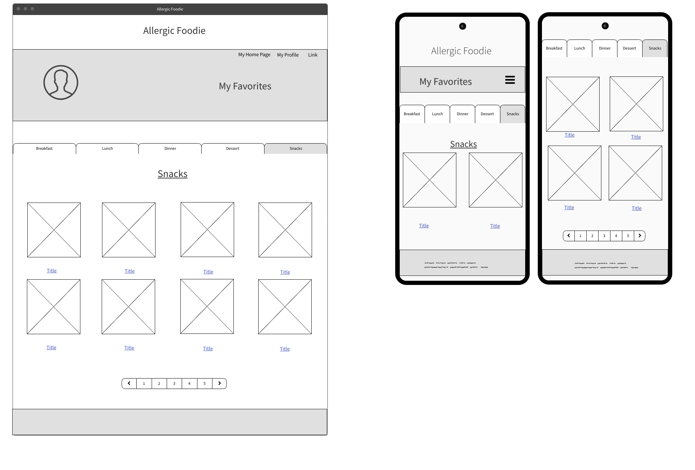

Navbar across the screen with links to direct you to different parts of the site, it will have the title of the page you are at.
Different tabs to organize your favorite recipes breakfast, lunch, dinner, desserts, and snacks. The tabs will help organize all your saved favorite recipes.
You favorite recipe in listed form. Shows the tile with a picture of your favorite recipe, and the pictures will be clickable, they will link you to the recipe page.
A set of buttons that will take you to the next or back to the start of your favorites.
footer with information that we decide as a group.
